Boîte · S4·F3 · 74 parties
A Demon in the Shadows48,6 % de victoires
🇪🇸 ES · 🇬🇧 EN · 🇫🇷 FR · 🇩🇪 DE · 🇮🇹 IT
📖 Guide de Berith (killer) · Guide de L'Armes Abbey (lieu)
Berith sur L'Armes Abbey. Sur 74 parties enregistrées, on gagne dans 48,6 % des cas, 16,6 points en dessous de la moyenne du jeu (65,3 %).
Échantillon réduit
Seulement 74 parties enregistrées. Réparties entre Dark Powers, Finales et Setups, chaque détail en compte très peu : à prendre comme un indice, pas comme un fait.
Ce qui la rend unique
Une victoire en deux temps : vaincre la nonne possédée Ursula, puis la ranimer avec des Divine Blessings. Les cases Malice remplacent ton dé par le dé maudit. Placer les 14 jetons Malice est une défaite immédiate. Le tueur le plus atmosphérique de la Série 4, et la carte est parmi les meilleures du jeu.
| Niveau | Avancé |
| La carte | Malice et système de dés béni/maudit |
Comment fonctionne Berith
- Vous devez chasser Berith du corps d'Ursula sans la tuer définitivement, avec les Divine Blessings pour améliorer sa survie.
- Avant le Finale, il cible la Final Girl ou une Victim et attaque une fois, sans se déplacer.
- Le jeu l'appelle généralement Ursula.
Résumé de la page du Final Girl Wiki (CC BY-SA).
La carte : L'Armes Abbey
18 cases et 3 sorties (nord-est, sud-est et sud-ouest). Cases de fouille : Sacristy, Museum et Kitchen. Six cases sont des Field Spaces (icône de blé) et une au nord-est est l'Altar of the Old Gods.
- La partie commence avec 4 jetons Malice : un dans la case du Killer et un dans chacune de trois cases adjacentes.
- Diverses cartes ajoutent de la Malice dans la case du Killer actif ou la plus proche possible ; si un 15e jeton doit être posé, vous perdez.
- Dans une case avec Malice, remplacez un dé rouge normal par le Cursed Die noir. La carte Action Benediction retire un jeton Malice.
- Blessed Die : deux étoiles sur le 6, une sur le 2 et une seule face vide (1).
- Cursed Die : Partial Success remplace l'étoile du 5 et un symbole Lose 1 Health figure sur le 1.
Cartes propres: Malice (14), Blessed Die, Cursed Die, Tokens (18)
Résumé de la page du Final Girl Wiki (CC BY-SA).
Le killer
Berith affiche 60,4 % de victoires toutes cartes confondues, sur 159 parties. Ici, sur L'Armes Abbey, le chiffre est de 48,6 %.
Setups
Du plus dur au plus facile. Au moins 20 parties.
| Setup | Victoires | Parties |
|---|---|---|
| Sunday Mass | 53,1 % | 32 |
| Tourism Bus | 53,6 % | 28 |
| Reflection & Meditation | 56,0 % | 25 |
| Daily Chores | 59,4 % | 32 |
| Supper Time | 62,5 % | 32 |
Dark Powers
| Dark Power | Victoires | Parties |
|---|---|---|
| Rejecting God | 47,2 % | 36 |
| Keeping Ursula Alive | 54,0 % | 37 |
| Satanic Influence | 66,7 % | 30 |
| Lamb to the Slaughter | 72,5 % | 40 |
Cartes Finale
| Carte Finale | Victoires | Parties |
|---|---|---|
| Unrevealed | 47,2 % | 72 |
| Hell on Earth | 71,4 % | 28 |
| Spiritual Attack | 84,0 % | 25 |
Où la trouver
Liens affiliés : si vous achetez, je touche une petite commission, sans surcoût pour vous. Cela ne change rien aux données ci-dessus.
Comment démarrer la partie
Les quatre ouvertures, avec laquelle choisir selon la mise en place, sont dans les stratégies d'ouverture.
📖 Guide de Berith (killer)
Se joue avec n'importe quel lieu. ↑ haut · Fiche de Berith → · Guide de L'Armes Abbey (lieu)
⌛ = Temps · ✴ = dégâts · 🎭 = augmenter l'Horreur · 🔪 = icône couteau (attaque) · ⊘🎭 = baisser l'Horreur · ❤️ = récupérer de la santé · 🙏 = icône de bénédiction · 🎲★ = remplacer 1 dé normal par le dé Blessed (plus de faces succès) · 🎲☠ = remplacer 1 dé normal par le dé Cursed · 🩸 = Bloodlust (soif de sang du Killer)
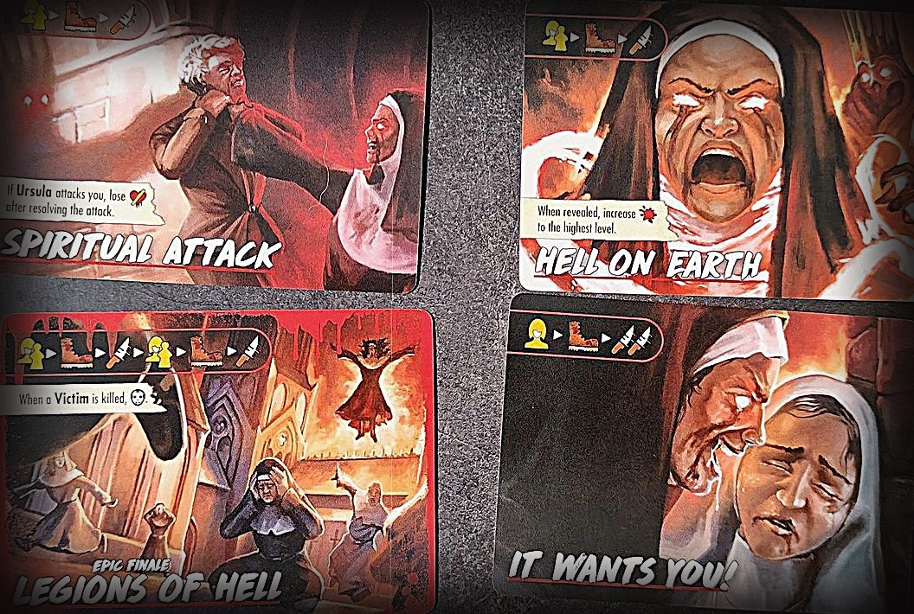
Attention
- Tuer Ursula n'est pas une victoire : tu révèles ensuite les bénédictions et il en faut au moins une qui montre de la santé. Sans bénédiction sur la feuille, rien ne peut la ramener.
Mise en place spéciale
- Place la feuille Divine Blessings à côté de la zone de jeu et choisis une face : Heavenly (normal) ou Hellish (difficile).
- Place les cartes Action Expel Demon dans le Tableau d'Actions.
La possession d'Ursula
- Berith est un démon qui possède Ursula, une religieuse. Le meeple du Killer, sa santé, ses valeurs d'Attaque et de Mouvement sont tous ceux d'Ursula possédée.
- Une fois que tu as « tué » Ursula, Berith quitte son corps.
Divine Blessings
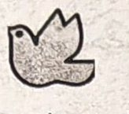
- Quand tu vois l'icône 🙏, place un jeton Final Health noir face cachée sur l'emplacement vide le plus haut de la feuille Divine Blessings et résous son effet. Tu l'obtiendras surtout grâce à la carte Action Expel Demon.
- Ces bénédictions sont ce qui peut ramener Ursula à la vie une fois que Berith a quitté son corps.
- Les jetons Final Health sur la feuille ne peuvent être ni retirés ni révélés, sauf si un effet le dit.
- Les jetons Final Health sont limités. Si certains quittent la partie à cause d'autres effets, ou sont attribués au Killer ou à la Final Girl, il en restera moins pour la feuille.
Gagner la partie
- D'abord, tue Ursula possédée avec les règles normales, en révélant son jeton Final Health noir et en restaurant sa santé si besoin. Une fois vaincue, Berith quitte son corps.
- Ensuite, révèle chaque jeton Final Health de la feuille Divine Blessings. Si l'un d'eux montre de la santé, Ursula revient et tu gagnes. S'ils sont tous vierges, son âme est damnée et tu perds.
- Il n'est pas nécessaire de remplir les 7 emplacements avant de la vaincre, mais plus il y a de bénédictions, plus elle a de chances de revenir.
Finales
- Toutes : Ursula vise toi ou la Victime la plus proche, se déplace et attaque.
- It Wants You! : te vise toi, se déplace et attaque 2 fois.
- Spiritual Attack : si Ursula t'attaque, tu perds aussi 💔 après l'attaque.
- Hell on Earth : une fois révélée, 🩸 monte au niveau maximum.
- Legions of Hell (Finale Epic) : vise, se déplace et attaque, puis recommence. Chaque fois qu'une Victime meurt, 🎭.
Dark Powers
- Lamb to the Slaughter : pendant l'Entretien, la Victime la plus éloignée d'Ursula est placée sur sa case.
- Keeping Ursula Alive : pendant l'Entretien, Ursula récupère ❤️. Si elle était déjà au maximum, 🎭.
- Rejecting God : tu perds 2 ⌛ chaque fois qu'une bénédiction 🙏 (la colombe) est résolue.
- Satanic Influence (Dark Power Epic) : pendant l'Entretien, subis ✴ égal au nombre de Victimes normales de ta case.
- Demonic Curse (Minor) : ta limite de main de cartes Action est 6. Défausse tout de suite jusqu'à 6.
- Blasphemy (Minor) : tu ne peux pas résoudre les cartes Action Expel Demon. Attention : c'est la façon habituelle d'obtenir des bénédictions.
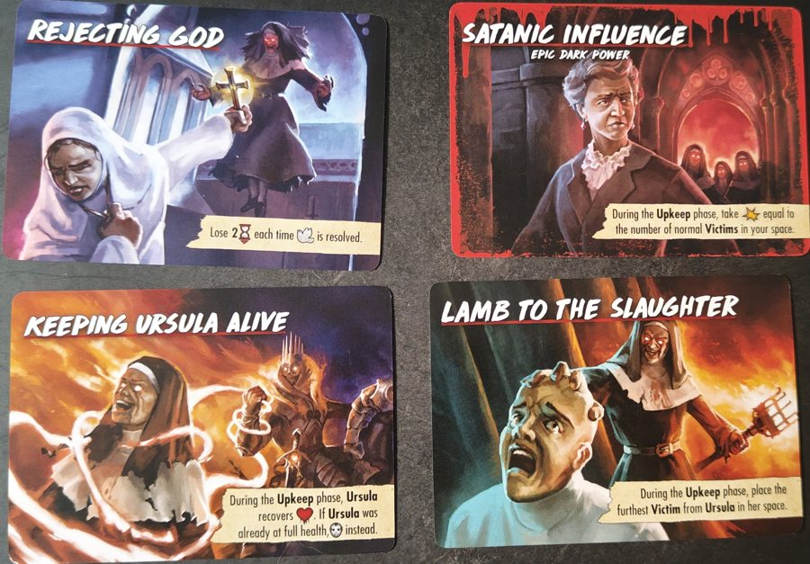
Cartes Terreur
- "You Don't Belong Here." : s'il n'y a pas de Victimes, défausse-la et pioche-en une autre. Sinon, vise la Victime la plus proche, se déplace et attaque. Si aucune ne meurt, +🩸.
- "Leave Her! Take Me!" : place Ursula sur ta case. Si tu as au moins 3 de santé, tu peux tomber à 1 pour gagner une bénédiction 🙏. Un échange : beaucoup de santé contre un pas vers la victoire.
- "God Exists, and So Does Satan." : place Ursula sur ta case. Jusqu'à la fin de la prochaine phase d'Action tu peux dépasser ta limite de main. Prends une carte Expel Demon et choisis : une carte Guard, une Furious Strike ou ⊘🎭. Puis elle t'attaque.
- "Serpents Are a Symbol of Satan." : un Serpent apparaît (1 ❤️). Tu peux jouer des cartes Action qui infligent des dégâts pour le tuer. S'il est encore vivant, tu subis ✴ égal à l'Attaque d'Ursula moins 1 (minimum 1) et tu peux te défendre. Si tu subis des dégâts, +🩸. Puis le Serpent disparaît.
- "I Know Your Name, Demon." : place Ursula sur ta case et fais un jet d'Horreur. 2 étoiles : 🙏. 1 étoile : rien. Échec : elle t'attaque. Si tu n'as pas été attaquée, +🩸.
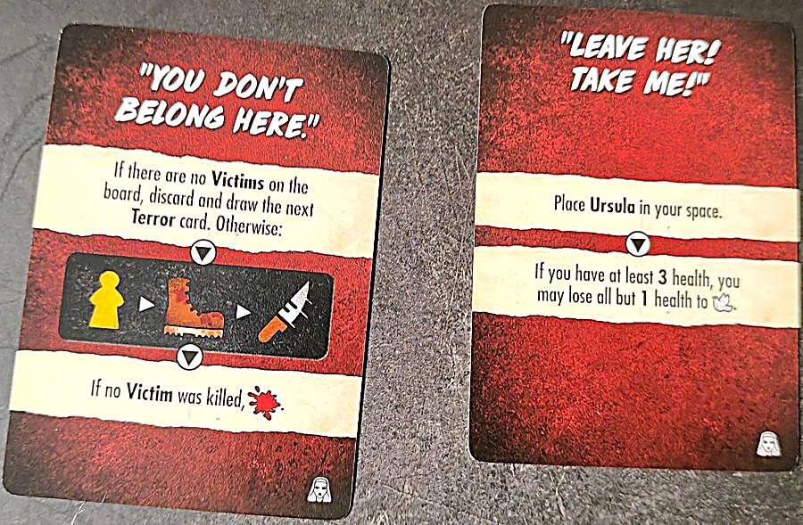
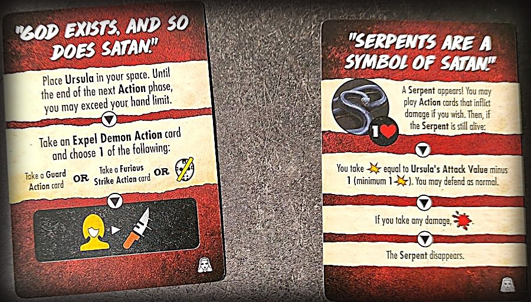
📖 Guide de L'Armes Abbey (lieu)
Se joue avec n'importe quel killer. ↑ haut · Guide de Berith (killer)
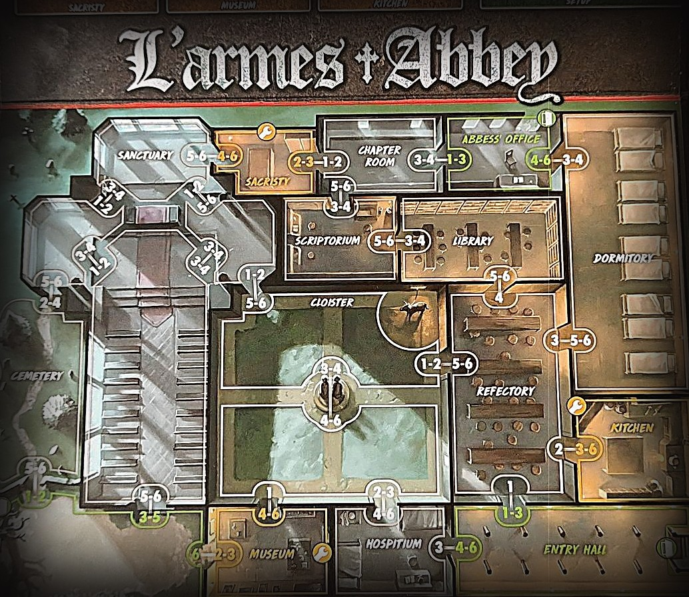
Attention
- Si les 14 jetons Malice sont sur le plateau et que tu dois en placer un autre, tu perds immédiatement.
- Tu ne lances jamais les dés Blessed et Cursed ensemble : si les deux icônes apparaissent, utilise celle qui est la plus nombreuse ; en cas d'égalité, elles s'annulent.
Mise en place spéciale
- Place un jeton Malice dans la case de départ du Killer et dans 3 cases adjacentes au Killer. S'il n'y a que 2 cases adjacentes, places-en un dans la case suivante la plus proche de ton choix. Tu commences avec 4 jetons Malice.
- Place le jeton Donkey dans la case Cloister.
- Place les cartes Action Benediction dans le Tableau d'Actions.
Dés Blessed et Cursed
- La boîte contient deux dés spéciaux : le dé Blessed (🎲★, plus de faces succès) et le dé Cursed (🎲☠). Ils remplacent parfois des dés normaux lors des jets d'Horreur.
- Quand tu vois l'une de leurs icônes, remplace 1 dé normal par ce dé lors du jet d'Horreur.
- Si les deux icônes sont présentes mais qu'il y en a plus d'un type, remplace 1 dé par ce type. S'il y en a autant de chaque, elles s'annulent et aucun des deux dés n'est utilisé.
- Si le dé Cursed montre un 1 dans le résultat final de ton jet d'Horreur, tu perds 1 santé (💔). Faces selon le livret de règles : le dé Blessed a une étoile sur le 2 et le 5, deux étoiles sur le 6 et un 1 vierge ; le dé Cursed n'a qu'une étoile sur le 6, un 2 vierge et le cœur brisé sur le 1.
- Les effets de la carte Action Improvise s'appliquent aussi au 5 du dé Cursed.
Malice
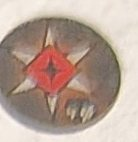
- Quand tu vois l'icône Malice sur une carte, place un jeton Malice dans la case du Killer actif. S'il y en a déjà un, place-le dans la case la plus proche du Killer sans jeton.
- S'il y a plusieurs Killers actifs, seul celui le plus proche de toi compte.
- S'il n'y a pas de Killer sur le plateau, révèle une carte de mise en place au hasard et considère sa case K comme la case du Killer.
- Les jetons Malice portent le symbole du dé Cursed : quand tu fais un jet d'Horreur dans une case avec Malice, remplace 1 dé normal par le dé Cursed.
- Les jetons Malice retirés (par la carte Action Benediction ou d'autres effets) retournent dans la réserve générale.
Ce que disent les cartes
- Les reliques des saints donnent 🎲★ quand tu résous certaines cartes : tu remplaces un dé normal par le dé Blessed.
- La Padlock Key permet au Donkey de se déplacer avec toi.
- Les reliques et les Événements s'appuient beaucoup sur le dé Blessed et les jetons Malice : voir ci-dessous.
Mises en place
K = départ du Killer · figurine jaune = la Final Girl · chiffres = Victimes par case.
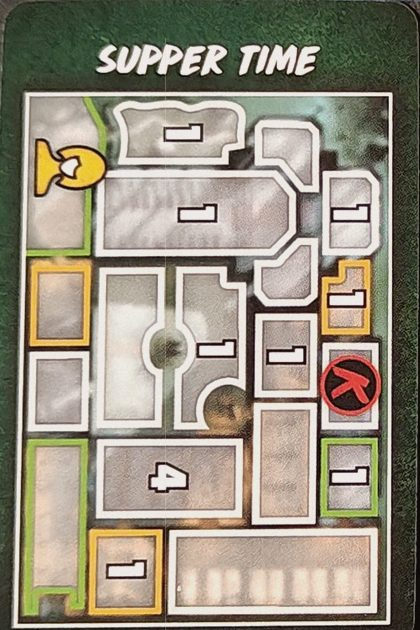
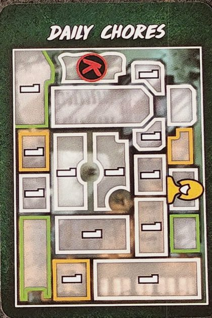
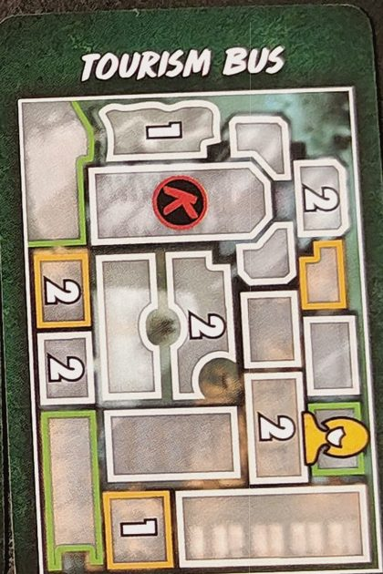
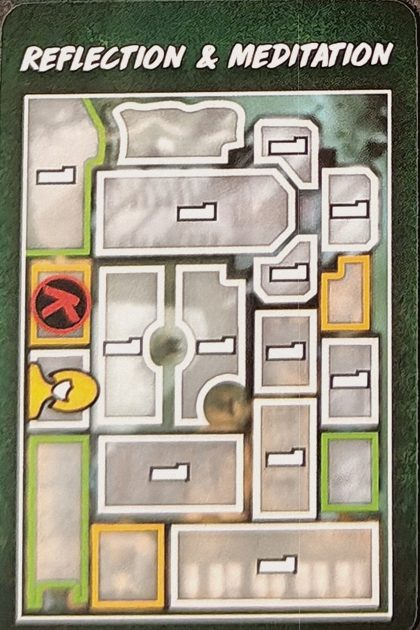
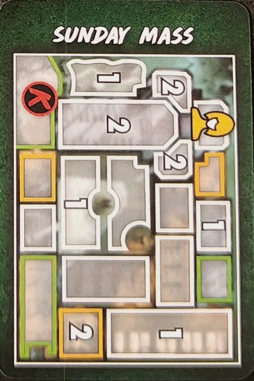
Objets
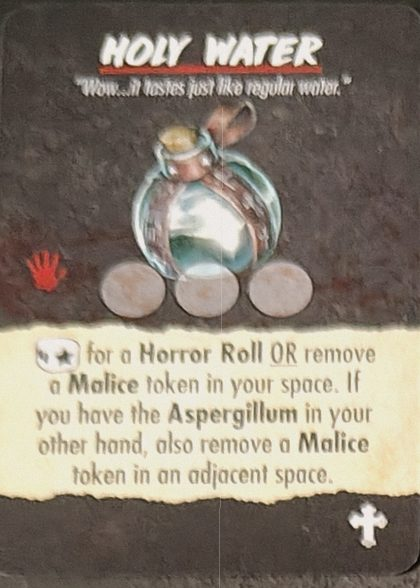
1 main · 3 utilisations. 🎲★ pour un jet d'Horreur ou retire un jeton Malice de ta case. Si tu as l'Aspergillum dans l'autre main, retire aussi un jeton Malice d'une case adjacente. Il y en a 2 dans la boîte.
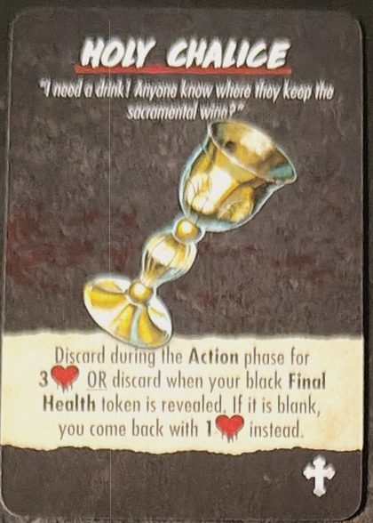
Défausse-le pendant la phase d'Action pour 3 ❤️ ou défausse-le quand ton jeton Final Health noir est révélé : s'il est vierge, tu reviens avec 1 ❤️ à la place.
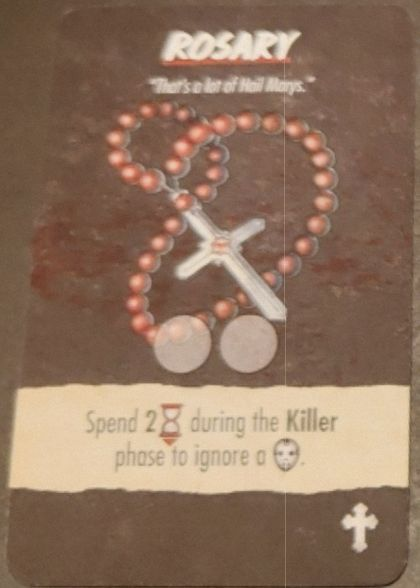
Il y en a 2 dans la boîte. 2 utilisations. Dépense 2 ⌛ pendant la phase du Killer pour ignorer un 🎭.
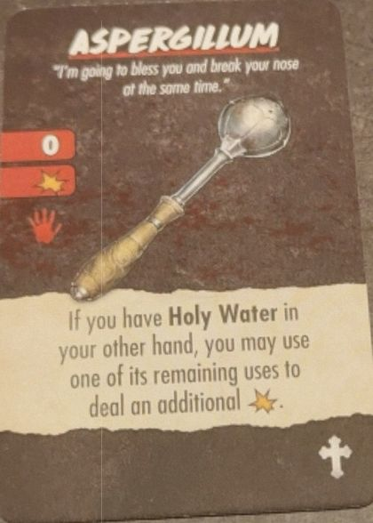
Arme · portée 0 · 1 ✴ · 1 main. Si tu as la Holy Water dans l'autre main, tu peux dépenser une de ses utilisations pour infliger 1 ✴ supplémentaire.
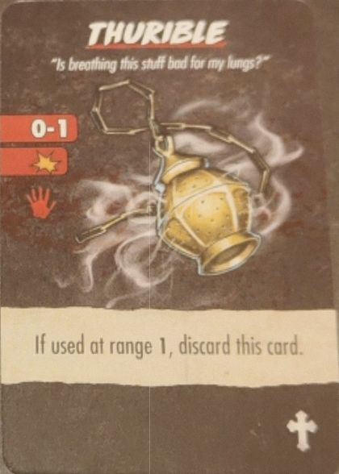
Arme · portée 0-1 · 1 ✴ · 1 main. S'il est utilisé à portée 1, défausse-le.
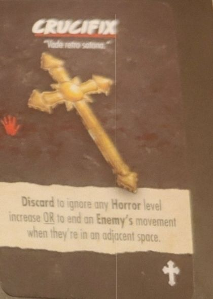
1 main. Défausse-le pour ignorer une augmentation du niveau d'Horreur ou pour stopper le déplacement d'un Ennemi quand il est dans une case adjacente.
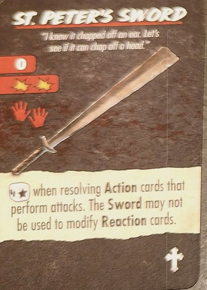
Arme · portée 0 · 2 ✴ · 2 mains. 🎲★ quand tu résous des cartes Action qui effectuent des attaques. L'épée ne peut pas servir à modifier des cartes Réaction.
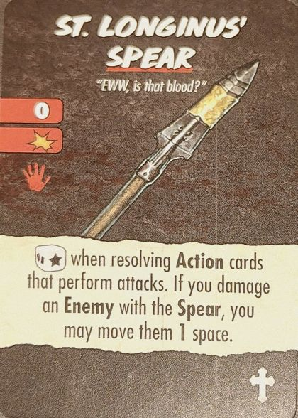
Arme · portée 0 · 1 ✴ · 1 main. 🎲★ quand tu résous des cartes Action qui effectuent des attaques. Si tu infliges des dégâts à un Ennemi avec la lance, tu peux le déplacer d'1 case.
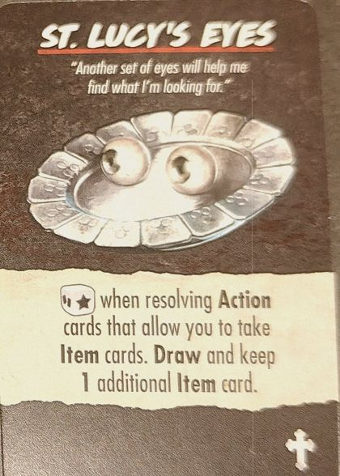
🎲★ quand tu résous des cartes Action qui permettent de prendre des Objets. Pioche et garde 1 Objet supplémentaire.
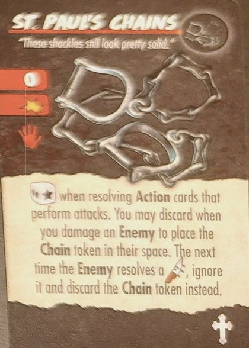
Arme · portée 0 · 1 ✴ · 2 mains. 🎲★ quand tu résous des cartes Action qui effectuent des attaques. Quand tu infliges des dégâts à un Ennemi, tu peux les défausser pour placer le jeton Chain dans sa case : la prochaine fois que cet Ennemi résout un 🔪, ignore-le et défausse le jeton.
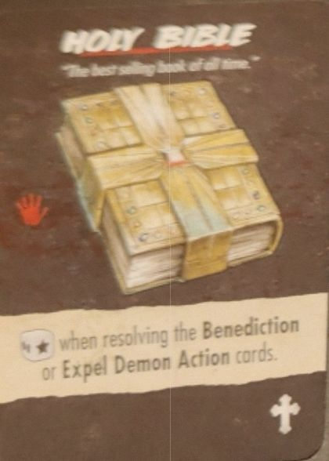
1 main. 🎲★ quand tu résous les cartes Action Benediction ou Expel Demon.
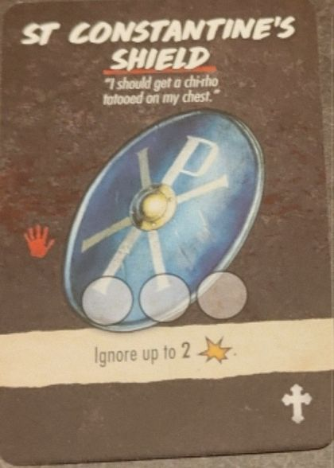
1 main · 3 utilisations. Ignore jusqu'à 2 ✴.
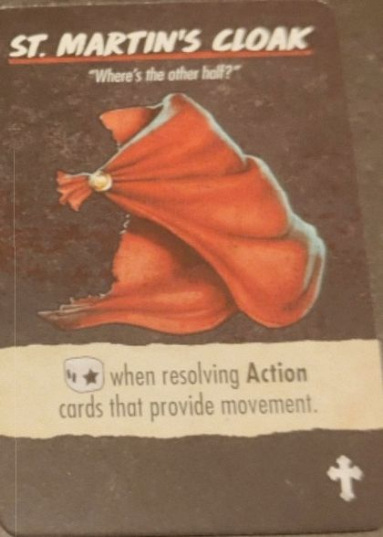
🎲★ quand tu résous des cartes Action qui donnent du mouvement.
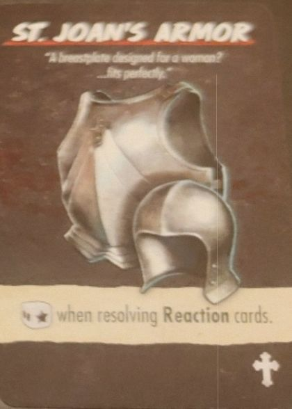
🎲★ quand tu résous des cartes Réaction.
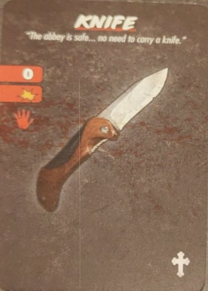
Arme · portée 0 · 1 ✴ · 1 main.
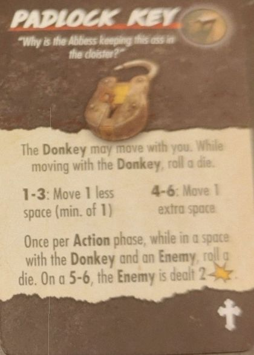
Le Donkey peut se déplacer avec toi. Quand tu te déplaces avec lui, lance un dé : 1-3 déplace-toi d'1 case de moins (min 1), 4-6 d'1 case de plus. Une fois par phase d'Action, dans une case avec le Donkey et un Ennemi, lance un dé : sur 5-6, l'Ennemi subit 2 ✴.
Événements de L'Armes Abbey
- Sins of the Past
- Lance 3 dés. Si tu obtiens ce que montre la carte sur les 3 (trois icônes rouges), tu es l'enfant du Diable et tu perds immédiatement. Pour tout autre résultat, place le jeton Repentance dans le Sanctuary : tant qu'il est sur le plateau, ignore tous les effets 🎲★. Retire-le en allant au Sanctuary et en dépensant 3 ⌛.
- Leap of Faith
- Regarde les cartes Objet inutilisées et prends-en 1.
- Pilgrimage
- Place 2 Victimes dans l'Hospitium, 2 dans le Refectory et 2 dans le Sanctuary.
- Black Mass
- Pendant la phase d'Entretien, place un jeton Malice si aucun jeton Malice n'a été ajouté ce tour-ci.
- Maddening Nursery Rhyme
- Dans la case avec le plus de Victimes, une Victime est tuée et toutes les autres Victimes de cette case paniquent.
- Breaking the Curse
- Prends une carte Action Benediction dans le Tableau d'Actions. Si tu as les deux en main, ⊘🎭.
- Father Damian
- Place Father Damian dans la Sacristy. Il te suit dans la case du Killer et ne peut être attaqué que s'il n'y a pas d'autres Victimes dans sa case. Tant qu'il est dans ta case, 🎲★ pour tous les jets d'Horreur et, une fois par phase d'Action, tu peux retirer un jeton Malice de ta case. S'il est tué dans ta case, 🎭🎭🎭.
- Demonic Crocodile
- Place le jeton Crocodile dans le Museum. Les Ennemis ne peuvent ni le cibler ni le tuer, mais toi tu peux l'attaquer et le tuer. Mouvement, Attaque et santé de 1. À la fin de la phase du Killer, il cible la Final Girl, se déplace et attaque. Puis toutes les Victimes de sa case paniquent.
- The Quebecer
- Place-le dans le Dormitory. Les Victimes normales de sa case ne te suivent que s'il vient aussi. Avec lui, une Victime supplémentaire peut te suivre. S'il est dans ta case pendant l'Entretien, ⌛ par Victime dans ta case.
- The Abbess
- Place-la dans l'Abbess' Office. Pendant l'Entretien, elle se déplace d'une case vers la Victime normale la plus proche qui n'est pas dans le Dormitory. Les Victimes normales de sa case de départ et d'arrivée se déplacent de 2 cases vers le Dormitory.
Texte à nous, d'après le livret de règles, les cartes et le wiki. Noms des cartes en anglais. Une erreur ? Dites-le-nous.